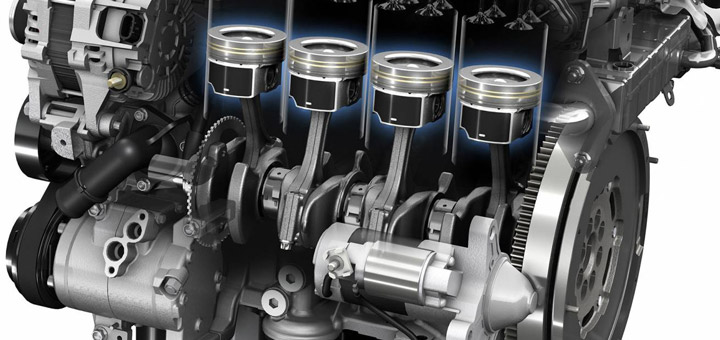

Detectamos y solucionamos fallas en motores diésel de las principales marcas como Cummins, Detroit Diesel, Volvo y Caterpillar utilizando herramientas de diagnóstico profesional.
Lectura de códigos de falla y análisis de parámetros del motor en tiempo real.
Diagnóstico y reparación del sistema de inyección para mejorar el rendimiento y consumo.
Inspección y mantenimiento de turbocargadores para recuperar potencia y eficiencia.
Permite que nuestros especialistas encuentren la causa del problema y te ofrezcan la mejor solución.
Solicitar Servicio